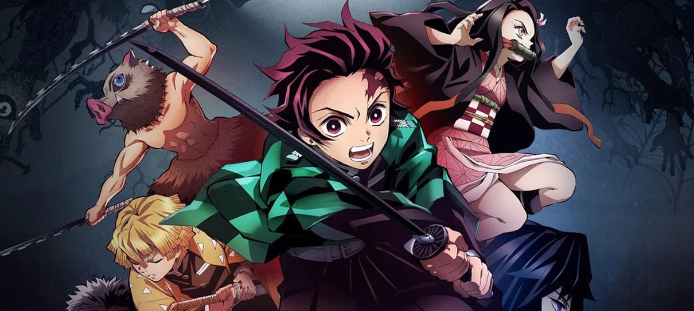
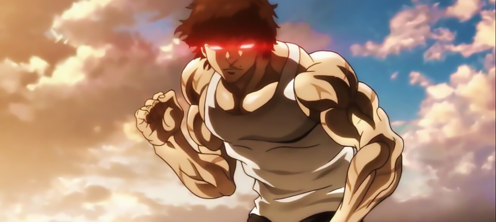
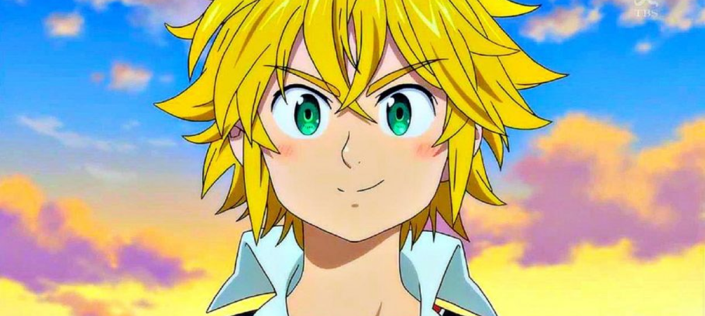

Sinopse & Info
Em Kimetsu no Yaiba, Tanjiro, um bondoso jovem que ganha a vida vendendo carvão descobre que sua família foi
massacrada por um demônio. E, para piorar, Nezuko, sua irmã mais nova e única sobrevivente, também acabou
transformada em um demônio.


Baki Hanma: Protagonista da série com apenas 17 anos de idade, Baki é um jovem Grappler
filho de Yujiro Hanma, o ser vivo mais forte do mundo. Tendo uma infãncia perturbada e uma adolescência
solitária, Baki treina para ser o lutador mais forte do mundo e superar seu pai, ganhando assim o amor de
sua mãe.
The Seven Deadly Sins (Nanatsu no Taizai) narra uma trama medieval que se passa no reino de
Liones. A comitiva dos sete cavaleiros do rei, que some misteriosamente, é acusada de assassinar o
mestre-espadachim e tramar um golpe de estado para dominar o reino.


O jovem Yuta Okkotsu ganha o controle de um espírito extremamente poderoso, então um grupo de
feiticeiros o matriculam na Tokyo Prefectural Jujutsu High School, para ajudá-lo a controlar esse poder e
também para ficar de olho nele.
Conta a história de Naruto Uzumaki, um jovem ninja que constantemente procura por
reconhecimento e sonha em se tornar Hokage, o líder máximo e mais poderoso de sua vila. A série é baseada em
um one-shot de Kishimoto publicado na edição de agosto de 1997 da revista Akamaru Jump.

A StarGeek é um serviço de streaming que oferece uma ampla variedade
de séries, filmes e documentários premiados em milhares de aparelhos
conectados à internet. Você pode assistir a quantos filmes e séries
quiser, quando e onde quiser – tudo por um preço mensal acessível.
Aqui você sempre encontra novidades. A cada semana, adicionamos novas
séries e filmes.